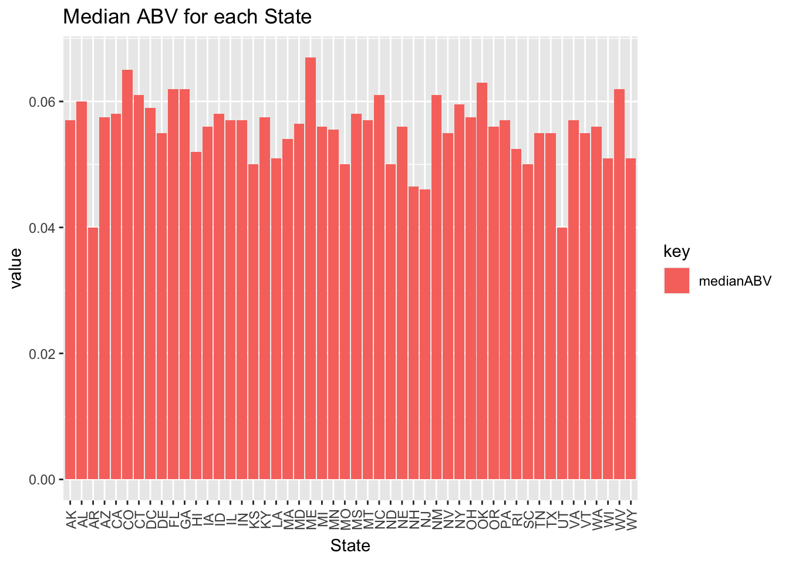
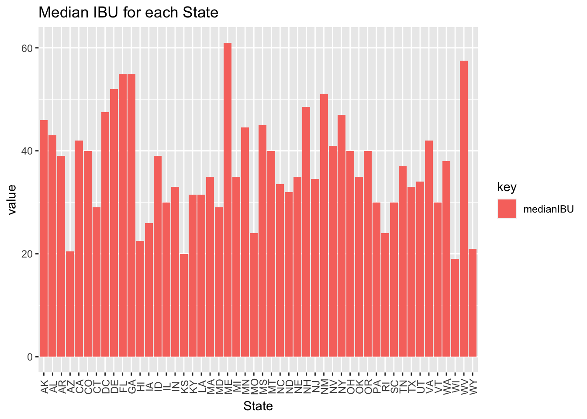
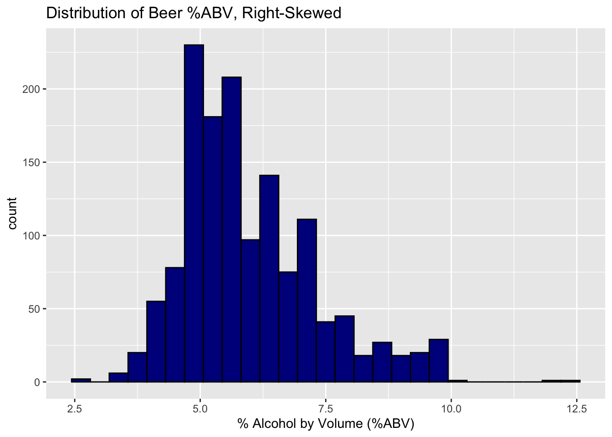
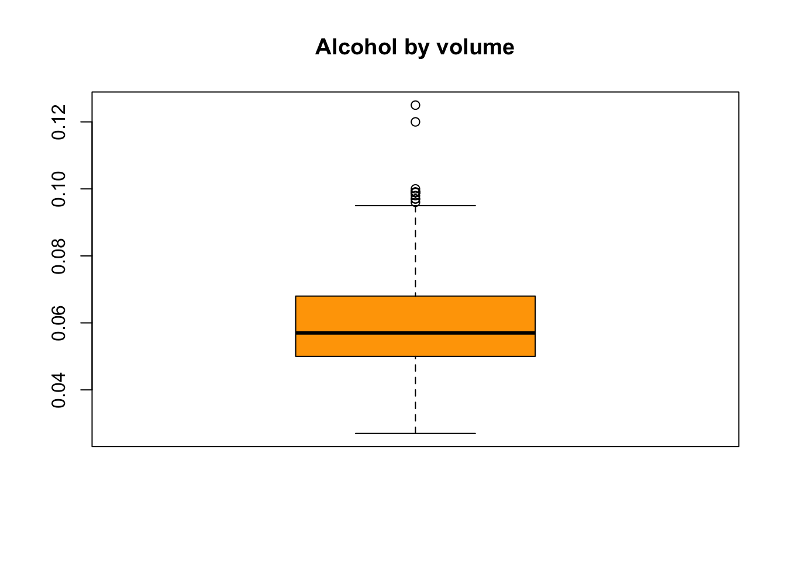
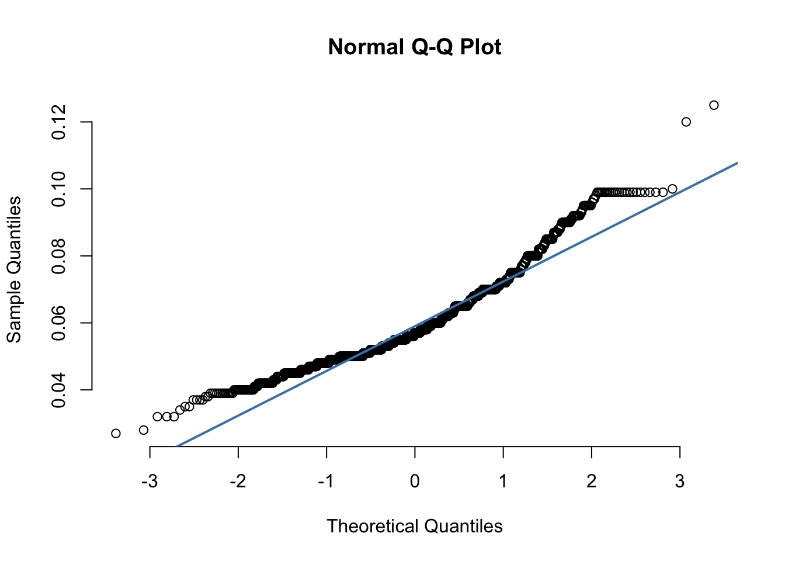
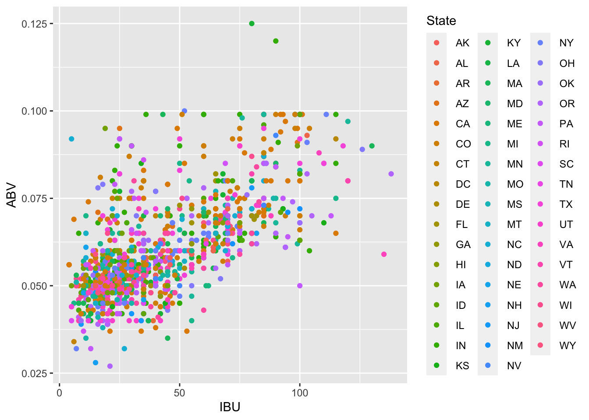
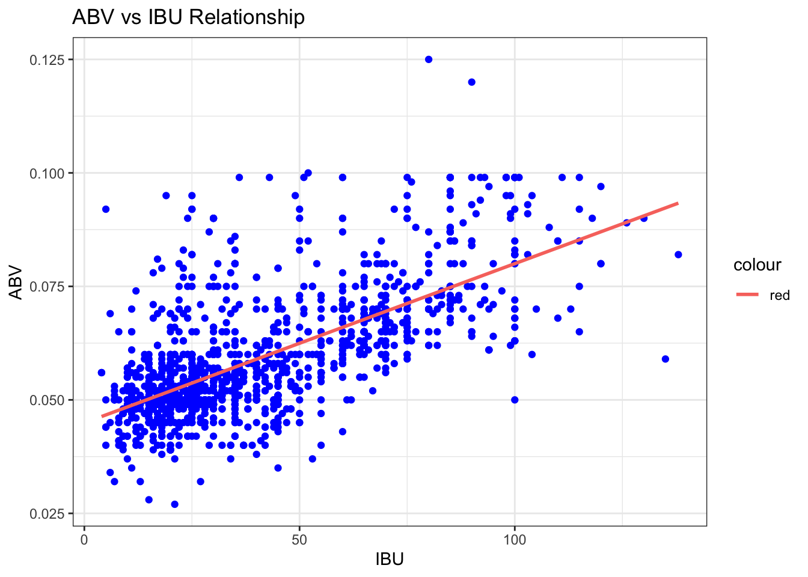

newbeer
Tai
7/24/2020
Prepare Data
We first prepare data. We import Brew and Breweries data from CSV files and include necessary libraries for our code.
options(warn=-1)
library(ggplot2)
library(tidyr)
library(plyr)
library(dplyr)##
## Attaching package: 'dplyr'## The following objects are masked from 'package:plyr':
##
## arrange, count, desc, failwith, id, mutate, rename, summarise,
## summarize## The following objects are masked from 'package:stats':
##
## filter, lag## The following objects are masked from 'package:base':
##
## intersect, setdiff, setequal, unionlibrary(class)
library(caret)## Loading required package: latticelibrary(e1071)
library("RColorBrewer")
beers = read.csv("beers.csv", header = TRUE)
breweries = read.csv("breweries.csv", header = TRUE)Number of Breweries per state
We want to analyze number of breweries in each states. We count the number of breweries for each state and plot it on top of each bar. From the graph, we can see that Colorado and California have most number of breweries. We see that some states have only 1 breweries such as DC, North and South Dakota. From this graph, we can ask a question why some states have more breweries than others.
totalState = count(breweries, State)
breweries %>% arrange() %>% ggplot(aes(x=State, fill = State)) + geom_bar() + geom_text(aes(State, n + 1, label=n, fill = NULL), data= totalState) + ggtitle("Number of Breweries for each State") + theme(axis.text.x = element_text(angle=90, vjust=0.6))
Merge two data
Breweries and Beer data are two separate data. Merging these two datas will give more variables to analyze. For example, we can look into the relationship between states and beers. In order to merge, we need to find if they have key variable that we can join together. Breweries data has Brew_ID and Beer data has Brewery_id which we can merge. Converting the name of column in Beer, two datas are merged as below.
colnames(beers)[5] = "Brew_ID"
fullData = merge(beers, breweries, by = "Brew_ID")
head(fullData)## Brew_ID Name.x Beer_ID ABV IBU Style
## 1 1 Get Together 2692 0.045 50 American IPA
## 2 1 Maggie's Leap 2691 0.049 26 Milk / Sweet Stout
## 3 1 Wall's End 2690 0.048 19 English Brown Ale
## 4 1 Pumpion 2689 0.060 38 Pumpkin Ale
## 5 1 Stronghold 2688 0.060 25 American Porter
## 6 1 Parapet ESB 2687 0.056 47 Extra Special / Strong Bitter (ESB)
## Ounces Name.y City State
## 1 16 NorthGate Brewing Minneapolis MN
## 2 16 NorthGate Brewing Minneapolis MN
## 3 16 NorthGate Brewing Minneapolis MN
## 4 16 NorthGate Brewing Minneapolis MN
## 5 16 NorthGate Brewing Minneapolis MN
## 6 16 NorthGate Brewing Minneapolis MNMissing values
In order to process the analysis, we need to clean up data as there might be some missing data or incorrectly formatted data. Below are the code that we have ran to find out if there is any missing data.
sapply(fullData, function(x) sum(is.na(x)))## Brew_ID Name.x Beer_ID ABV IBU Style Ounces Name.y City State
## 0 0 0 62 1005 0 0 0 0 0cleanData = fullData %>% filter(!is.na(ABV) & !is.na(IBU))There are 1005 rows of data that do not have IBU value. We need a IBU data in order to make an analysis so we decided to drop the rows that are missing IBU and ABV data.
Median ABV and IBU per states
We want to look at the median values for each state. In order to get median for each states, we collecte the data grouping by state and summarize them. With the data we calculated, we draw a bar charts with median ABV and IBU of all states.
cleanData %>% group_by(State) %>% summarize(medianABV = median(ABV), medianIBU = median(IBU), count = n())## # A tibble: 50 x 4
## State medianABV medianIBU count
## <fct> <dbl> <dbl> <int>
## 1 " AK" 0.057 46 17
## 2 " AL" 0.06 43 9
## 3 " AR" 0.04 39 1
## 4 " AZ" 0.0575 20.5 24
## 5 " CA" 0.058 42 135
## 6 " CO" 0.065 40 146
## 7 " CT" 0.061 29 6
## 8 " DC" 0.059 47.5 4
## 9 " DE" 0.055 52 1
## 10 " FL" 0.062 55 37
## # … with 40 more rowscleanData %>%
group_by(State) %>%
summarise(medianABV = median(ABV)) %>%
gather(key, value, -State) %>%
ggplot(aes(State, value, fill = key)) + geom_bar(stat = "identity", position = "dodge") + ggtitle("Median ABV for each State") + theme(axis.text.x = element_text(angle=90, vjust=0.6))
cleanData %>%
group_by(State) %>%
summarise(medianIBU = median(IBU)) %>%
gather(key, value, -State) %>%
ggplot(aes(State, value, fill = key)) + geom_bar(stat = "identity", position = "dodge") + ggtitle("Median IBU for each State") + theme(axis.text.x = element_text(angle=90, vjust=0.6))
medABV <- cleanData %>% group_by(State) %>% summarize(medianABV = median(ABV), medianIBU = median(IBU), count = n()) %>% arrange(-medianABV)
medABV <- medABV %>% select(State, medianABV)
medIBU <- cleanData %>% group_by(State) %>% summarize(medianABV = median(ABV), medianIBU = median(IBU), count = n()) %>% arrange(-medianIBU)
medIBU <- medIBU %>% select(State, medianIBU)
head(medABV)## # A tibble: 6 x 2
## State medianABV
## <fct> <dbl>
## 1 " ME" 0.067
## 2 " CO" 0.065
## 3 " OK" 0.063
## 4 " FL" 0.062
## 5 " GA" 0.062
## 6 " WV" 0.062tail(medABV)## # A tibble: 6 x 2
## State medianABV
## <fct> <dbl>
## 1 " ND" 0.05
## 2 " SC" 0.05
## 3 " NH" 0.0465
## 4 " NJ" 0.046
## 5 " AR" 0.04
## 6 " UT" 0.04head(medIBU)## # A tibble: 6 x 2
## State medianIBU
## <fct> <dbl>
## 1 " ME" 61
## 2 " WV" 57.5
## 3 " FL" 55
## 4 " GA" 55
## 5 " DE" 52
## 6 " NM" 51tail(medIBU)## # A tibble: 6 x 2
## State medianIBU
## <fct> <dbl>
## 1 " RI" 24
## 2 " HI" 22.5
## 3 " WY" 21
## 4 " AZ" 20.5
## 5 " KS" 20
## 6 " WI" 19In median ABV bar chart, we can see it quite evenly spread out except for Arizona and Utah that it has significatly lower medians than others. We see that Maine and Colorado has much higher median ABV than other states. For median IBU bar chart, results come out to be distributed wider than median ABV. We see there is dramatic differences for each states. We found Maine and West Virgina have highest median IBU, and Kansas and Wisconsin have lowest median IBU.
Max ABV and IBU of state
In order to get the max ABV and IBU value, we followed two approaches. One is to get max values for each state by grouping state and summarizing each state. Another appropach is to get max values among all states.
cleanData %>% group_by(State) %>% summarize(maxABV = max(ABV), maxIBU = max(IBU))## # A tibble: 50 x 3
## State maxABV maxIBU
## <fct> <dbl> <int>
## 1 " AK" 0.065 71
## 2 " AL" 0.093 103
## 3 " AR" 0.04 39
## 4 " AZ" 0.095 99
## 5 " CA" 0.099 115
## 6 " CO" 0.099 104
## 7 " CT" 0.088 85
## 8 " DC" 0.092 115
## 9 " DE" 0.055 52
## 10 " FL" 0.082 82
## # … with 40 more rowsmaxABV = max(cleanData$ABV)
maxIBU = max(cleanData$IBU)
cleanData %>% filter(ABV == maxABV)## Brew_ID Name.x Beer_ID ABV IBU Style Ounces
## 1 2 London Balling 2685 0.125 80 English Barleywine 16
## Name.y City State
## 1 Against the Grain Brewery Louisville KYcleanData %>% filter(IBU == maxIBU)## Brew_ID Name.x Beer_ID ABV IBU
## 1 375 Bitter Bitch Imperial IPA 980 0.082 138
## Style Ounces Name.y City State
## 1 American Double / Imperial IPA 12 Astoria Brewing Company Astoria ORFirst chart display max ABV and IBU for each state. From the data, we found that London Balling has ABV of 0.125 and it has maximum ABV among all beers. We also found Bitter Bitch Imperial IPA contains IBU of 138 which is the maximum among all beers.
Summarize ABV
Checking distribution of the data is one of key part of EDA. We plot several distributions graphs of ABV to check its normality.
summary(cleanData$ABV)## Min. 1st Qu. Median Mean 3rd Qu. Max.
## 0.02700 0.05000 0.05700 0.05991 0.06800 0.12500# Histogram of ABV Percentage
cleanData %>% ggplot(aes(ABV*100)) + geom_histogram(fill="darkblue",color="black", binwidth= 0.375) + xlab("% Alcohol by Volume (%ABV)") + ggtitle("Distribution of Beer %ABV, Right-Skewed") 
# Box Plot
boxplot(cleanData$ABV, col='orange',main = 'Alcohol by volume')
# QQ plot for normality check
qqnorm(cleanData$ABV, pch = 1, frame = FALSE)
qqline(cleanData$ABV, col = "steelblue", lwd = 2, main = 'Alcohol by volume') We see it’s quite right skewed from its histogram. QQ plot also showed that this is not normally distributed data as it has some curve at upper quantiles. In the box plot, we clearly see there are some outliers. such as London Balling beer we found from MAX ABV.
Relationship between ABV and IBU
We made scatter plot between ABV and IBU to see what is the relationship, and we see that it has some positive relationship that as ABV Value goes up IBU tend to go up as well.
# Scatter Plot for ABV vs IBU for each State
cleanData %>% ggplot(aes(x=IBU, y=ABV, color=State)) + geom_point()
#7 Scatter Plot for ABV vs IBU relationship
theme_set(theme_bw()) # pre-set the bw theme.
g <- ggplot(cleanData, aes(IBU, ABV, color='red'))
g + geom_point(color='blue') +
geom_smooth(method="lm", se=F) +
labs(y="ABV",
x="IBU",
title="ABV vs IBU Relationship")## `geom_smooth()` using formula 'y ~ x'